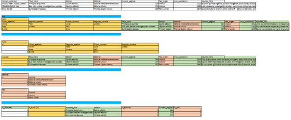

Es la aplicación de un conjunto de reglas que permite aprobar la construcción de un modelo de base de datos relacionales. Es el proceso de organizar los datos de una base de datos. Se incluye la creación de tablas y el establecimiento de relaciones entre ellas según reglas diseñadas tanto para proteger los datos como para hacer que la base de datos sea más flexible al eliminar la redundancia y las dependencias incoherentes.
Evitar la redundancia de los datos (datos iguales). Los datos redundantes desperdician el espacio de disco y crean problemas de mantenimiento. Evitar problemas de actualización de los datos en las tablas. Proteger la integridad de los datos.
Para corregir errores en el diseño de la base de datos. Mientras se puedan aplicar más de estas reglas o formas normales a una tabla, habrá menos anomalías o errores lógicos al momento de efectuar el diseño de nuestras tablas. Si decide infringir una de las tres primeras reglas de la normalización, asegúrese de que su aplicación se anticipa a los problemas que puedan aparecer, como la existencia de datos redundantes y de dependencias incoherentes.
Regla que define una característica que una relación debe cumplir.
Una relación está en FN1 si y solo si todos los atributos son atómicos. Además, debe haber solo una llave primaria. Un atributo es atómico si representa solo un valor. No deben existir más valores en el campo de la tabla. Si existen, se eliminan y se emplean en nuevas relaciones.
Una relación está en FN2 si y solo si está en FN1 y todos los atributos no clave son completamente dependientes de la llave primaria. Si un atributo no clave depende de otro atributo no clave, se debe separar en una nueva relación.
Una relación está en FN3 si y solo si está en FN2 y todos los atributos no clave son independientes entre sí. Si un atributo no clave depende de otro atributo no clave, se debe separar en una nueva relación.
Una relación esta en FNBC si y solo si todos sus determinantes son llaves de la relación. Un elemento es determinante cuando un atributo determina a otro (A->C). Si se demuestra que la relación esta en FNBC, tiene que estar en FN2.
Se hace el proceso de normalización
Crear un Diagrama Entidad Relación a partir de la 3era Forma Normal donde se realiza la Facturación de una empresa con sus relaciones completas todo esto trabajado en Excel y Workbench
Buscar un ejemplo de una Ficha Bibliográfica y desarrollar lo siguiente: Normalización (Excel)
Diagrama ER (WorkBench)
Script Base de Datos (WorkBench)
Creación de la base de datos, inserción de información (PHPMyAdmin)